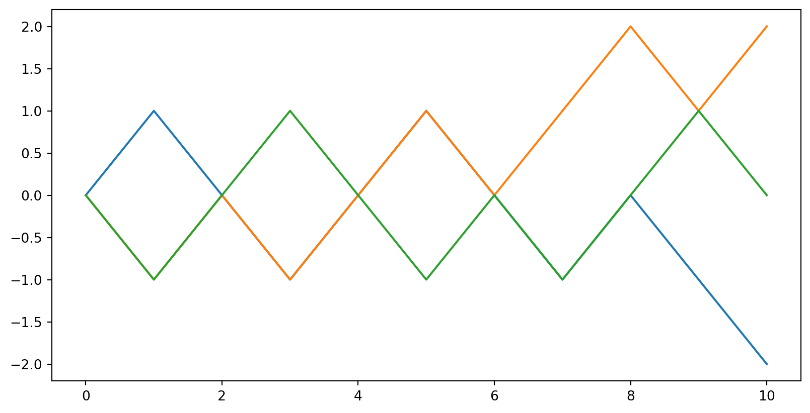
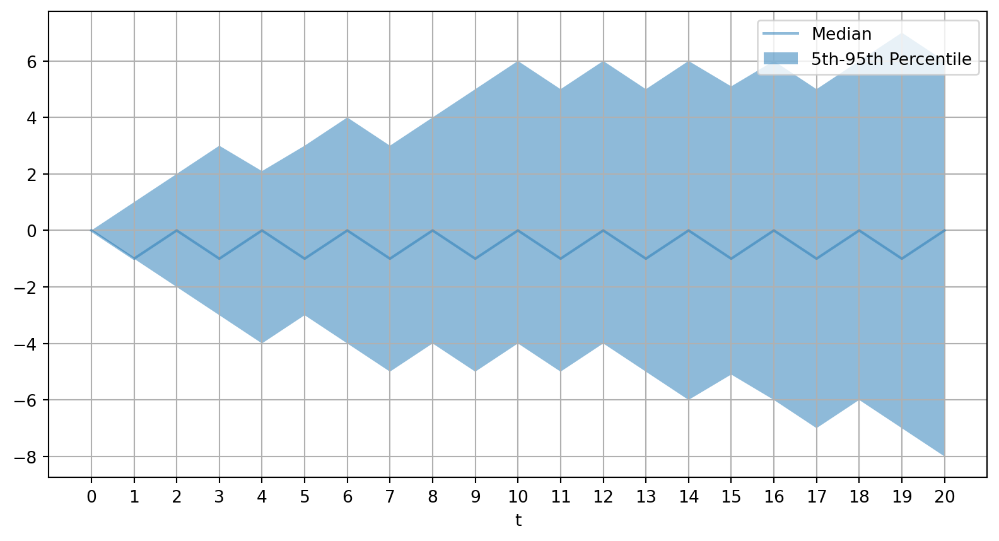
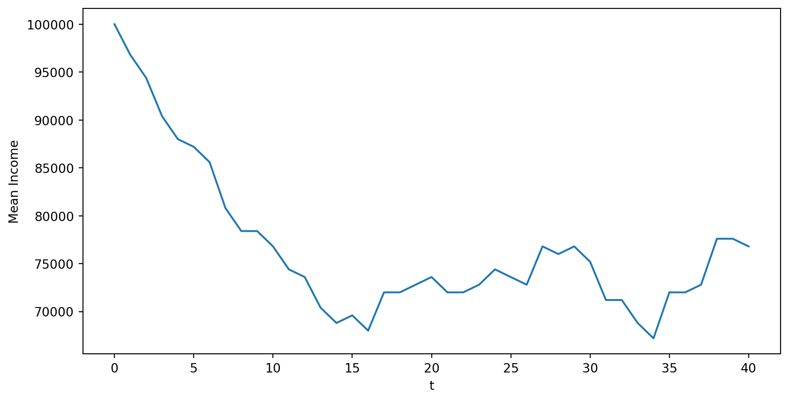
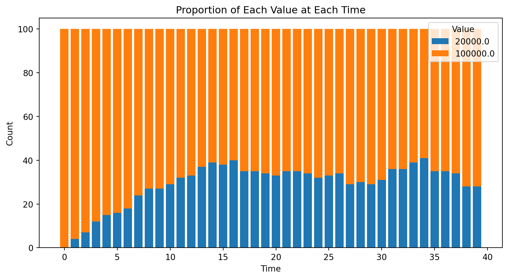
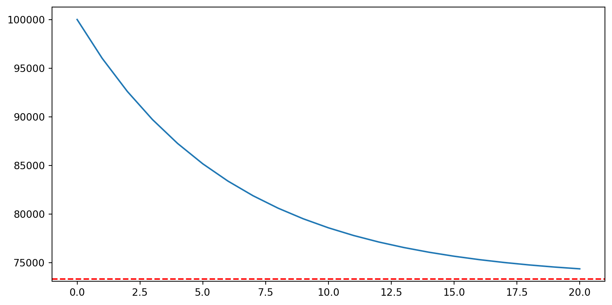

Stochastic Processes, Markov Chains, and Expectations
We will introduce,
Take a stochastic process \(\{X_t\}_{t=0}^{\infty}\)
Define the information set at \(t\) as \(\mathcal{I}_t \equiv \{X_0, X_1, \ldots, X_t\}\)
The conditional probability of \(X_{t+1}\) given the information set \(\mathcal{I}_t\) is
\[ \mathbb{P}(X_{t+1} \,|\, X_t,X_{t-1},\ldots X_0) \equiv \mathbb{P}(X_{t+1} \,|\, \mathcal{I}_t) \]
You may instead be interested in a function, \(f(\cdot)\), of the random variable (e.g., financial payoffs, utility, losses in econometrics)
Use the conditional probability of the forecasts for conditional expectations
\[ \mathbb{E}[f(X_{t+1}) \,|\, X_t,X_{t-1},\ldots X_0] \equiv \mathbb{E}[f(X_{t+1}) \,|\, \mathcal{I}_t] \]
Standard properties of expectations hold conditioning on information sets,
\[ \begin{aligned} \mathbb{E}[f(X_{t+1}) \,|\, X_t,X_{t-1},\ldots X_0] &\equiv \mathbb{E}[f(X_{t+1}) \,|\, \mathcal{I}_t]\\ &\equiv \mathbb{E}_t[f(X_{t+1})] \end{aligned} \]
\[ \begin{aligned} \mathbb{E}\left[\mathbb{E}[X_{t+2} \,|\, X_{t+1}, X_t, X_{t-1}, \ldots]\,|\,X_t, X_{t-1}, \ldots\right] &= \mathbb{E}[X_{t+2}\,|\,X_t, X_{t-1}, \ldots]\\ \mathbb{E}\left[\mathbb{E}[X_{t+2} \,|\, \mathcal{I}_{t+1}]\,|\,\mathcal{I}_t\right] &= \mathbb{E}[X_{t+2}\,|\,\mathcal{I}_t]\\ \mathbb{E}_t[\mathbb{E}_{t+1}[X_{t+2}]] &= \mathbb{E}_t[X_{t+2}] \end{aligned} \]
(1st-Order) Markov Process: a stochastic process where the conditional probability of the future is independent of the past given the present
\[ \mathbb{P}(X_{t+1} \,|\, X_t, X_{t-1}, \ldots) = \mathbb{P}(X_{t+1} \,|\, X_t) \]
Conditional expectations are are then \[ \mathbb{E}[f(X_{t+1}) \,|\, X_t, X_{t-1},\ldots X_0] = \mathbb{E}[f(X_{t+1}) \,|\, X_t] \]
\[ \mathbb{E}[X_{t+1} \,|\, X_t, X_{t-1}, \ldots, X_0] = X_t \]
\[ \mathbb{E}[X_{t+1} \,|\, X_t] = X_t,\quad \text{ or } \quad \mathbb{E}_t[X_{t+1}] = X_t \]
Let \(X_t \in \{-\infty, \ldots, -1, 0, 1, \ldots \infty\}\)
A simple two-state random walk can be written as the following transition
\[ \mathbb{P}(X_{t+1} = X_t + 1\,|\,X_t) = \mathbb{P}(X_{t+1} = X_t - 1\,|\,X_t) = \frac{1}{2} \]
Markov since \(X_t\) summarizes the past. Martingale?
\[ \begin{aligned} \mathbb{E}(X_{t+1} \,|\, X_t) &= \mathbb{P}(X_{t+1} = X_t+1\,|\,X_t)\times (X_t+1)\\ & + \mathbb{P}(X_{t+1} = X_t-1\,|\,X_t)\times (X_t-1)\\ &= \frac{1}{2} (X_t + 1) + \frac{1}{2} (X_t - 1) = X_t \end{aligned} \]
def simulate_walk(rv, X_0, T):
X = np.zeros((X_0.shape[0], T+1))
X[:, 0] = X_0
for t in range(1, T+1):
X[:, t] = X[:, t-1] \
+rv.rvs(size=X_0.shape[0])
return X
steps = np.array([-1, 1])
probs = np.array([0.5, 0.5])
rv = rv_discrete(values=(steps, probs))
X_0 = np.array([0.0, 0.0, 0.0])
X = simulate_walk(rv, X_0, 10)
plt.figure()
plt.plot(X.T)
num_trajectories, T = 100, 20
X = simulate_walk(rv, np.zeros(num_trajectories), T)
percentiles = np.percentile(X, [50, 5, 95], axis=0)
fig, ax = plt.subplots()
plt.plot(np.arange(T+1), percentiles[0,:], alpha=0.5, label='Median')
plt.fill_between(np.arange(T+1), percentiles[1,:], percentiles[2,:],
alpha=0.5, label='5th-95th Percentile')
plt.xlabel('t')
ax.set_xticks(np.arange(T+1))
plt.legend()
plt.grid(True)
An auto-regressive process of order 1, AR(1), is the Markov process
\[ X_{t+1} = \rho X_t + \sigma \epsilon_{t+1} \]
Can show \(X_{t+1}\,|\,X_t \sim \mathcal{N}(\rho X_t, \sigma^2)\) and hence
\[ \mathbb{E}_t[X_{t+1}] = \rho X_t,\quad \mathbb{V}_t[X_{t+1}] = \sigma^2 \]
\[ \mathbb{E}[X_{t+1}\,|\,\mathcal{I}_t] = X_t\\ \]
Given all of the information available, the best forecast of the future is the current price. Plenty of variables in \(\mathcal{I}_t\) for individuals, including public prices
Does this mean there is never arbitrage?
A Markov Chain is a Markov process with a finite number of states
\[ P_{ij} \equiv \mathbb{P}(X_{t+1} = j \,|\, X_t = i) \]
We are counting from \(0\) to \(N-1\) for coding convenience in Python. Names of discrete states are arbitrary!
The \(P\) summarizes all transitions. Let \(X_t\) be the state at time \(t\) which in general is a probability distribution with pmf \(\pi_t\)
Can show that the evolution of this distribution is given by
\[ \pi_{t+1} = \pi_t \cdot P \]
And hence given some \(X_t\) we can forecast the distribution of \(X_{t+j}\) with
\[ X_{t+j}\,|\,X_t \sim \pi_t \cdot P^j \]
Take some \(X_t\) initial condition, does this converge?
\[ \lim_{j\to\infty} X_{t+j}\,|\,X_t = \lim_{j\to\infty} \pi_t \cdot P^j = \pi_{\infty}? \]
How does it compare to fixed point below, i.e. does \(\bar{\pi} = \pi_{\infty}\) for all \(X_t\)?
\[ \bar{\pi} = \bar{\pi} \cdot P \]
\[ \mathbb{E}[X_{t+j} \,|\, X_t] = \sum_{i=0}^{N-1} x_i \pi_{t+j,i} = (\pi_t \cdot P^j) \cdot x \]
\[ \mathbb{E}[X_{t+j} \,|\, X_t = E] = (\begin{bmatrix}1 & 0\end{bmatrix} \cdot P^j) \cdot x \]
a, b = 0.05, 0.1
P = np.array([[1-a, a], # P(X | E)
[b, 1-b]]) # P(X | U)
N = P.shape[0]
P_rv = [rv_discrete(values=(np.arange(0,N),
P[i,:])) for i in range(N)]
X_0 = 0 # i.e. E
X_1 = P_rv[X_0].rvs() # draw index | X_0
print(f"X_0 = {X_0}, X_1 = {X_1}")
T = 10
X = np.zeros(T+1, dtype=int)
X[0] = X_0
for t in range(T):
X[t+1] = P_rv[X[t]].rvs() # draw given X_t
print(f"X_t indices =\n {X}")X_0 = 0, X_1 = 0
X_t indices =
[0 0 0 0 0 1 1 1 1 1 1]def simulate_markov_chain(P, X_0, T):
N = P.shape[0]
num_chains = X_0.shape[0]
P_rv = [rv_discrete(values=(np.arange(0,N),
P[i,:])) for i in range(N)]
X = np.zeros((num_chains, T+1), dtype=int)
X[:,0] = X_0
for t in range(T):
for n in range(num_chains):
X[n, t+1] = P_rv[X[n, t]].rvs()
return X
X_0 = np.zeros(100, dtype=int) # 100 people start employed
T = 40
X = simulate_markov_chain(P, X_0, T)
# Map indices to RV values
values = np.array([100000.00, 20000.00]) # map state to value
X_values = values[X] # just indexes by the X
# Plot means
X_mean = np.mean(X_values, axis=0)
plt.plot(np.arange(0, T+1), X_mean)
plt.xlabel('t')
plt.ylabel('Mean Income')
plt.show()
# Count the occurrences of each unique value at each time step
unique_values = np.unique(X_values)
counts = np.array([[np.sum(X_values[:, t] == val) for val in unique_values] for t in range(T)])
# Create the stacked bar chart
fig, ax = plt.subplots()
bottoms = np.zeros(T)
for i, val in enumerate(unique_values):
ax.bar(range(T), counts[:, i], bottom=bottoms, label=str(val))
bottoms += counts[:, i]
# Labels and title
ax.set_xlabel('Time')
ax.set_ylabel('Count')
ax.set_title('Proportion of Each Value at Each Time')
ax.legend(title='Value')
plt.show()
pi_bar = [0.66666667 0.33333333]
pi_inf = [0.6666667 0.3333333]def forecast_distributions(P, pi_0, T):
N = P.shape[0]
pi = np.zeros((T+1, N))
pi[0, :] = pi_0
for t in range(T):
pi[t+1, :] = pi[t, :] @ P
return pi
x = np.array([100000.00, 20000.00])
pi_0 = np.array([1.0, 0.0])
T = 20
pi = forecast_distributions(P, pi_0, T)
E_X_t = np.dot(pi, x)
E_X_bar = pi_bar @ x
plt.plot(np.arange(0, T+1), E_X_t)
plt.axhline(E_X_bar, color='r',
linestyle='--')
plt.show()